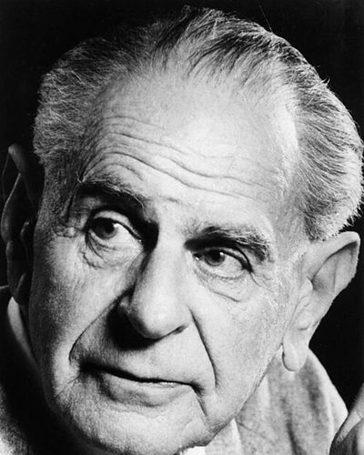

Ideologies / Liberal
What is Open Society Liberalism?
Open Society Liberalism is a political ideology in the Liberal family. Popper rejects the belief, which he traces through Plato, Hegel and Marx, that history follows laws that reveal a destined ideal society. Attempts to rebuild society whole according to such a blueprint lead to tyranny. An open society accepts that all knowledge is fallible, improves itself by small testable reforms aimed at reducing suffering, and judges democracy by whether rulers can be removed without bloodshed. The state should protect the economically weak, and need not tolerate those who would destroy tolerance by force.
Reform piece by piece, and keep the power to dismiss your rulers.
Defined from: Karl Popper, The Open Society and Its Enemies (1945)
See how close you are to Open Society Liberalism Dare a friend to answer as one


Where Open Society Liberalism stands on 13 axes
Each axis runs from 0 to 100. A score of 50 is the middle. On a classic compass it sits in the Libertarian Right quadrant.
| Axis | Position | Score | In words |
|---|---|---|---|
| EconomyMarket to Planned | 40 | Leans Market | |
| OwnershipPrivate to Collective | 30 | Strongly Private | |
| RightsLiberty to Security | 20 | Strongly Liberty | |
| GovernmentDemocracy to Autocracy | 5 | Very strongly Democracy | |
| StructureDecentralised to Centralised | 45 | Balanced | |
| NationInternationalist to Nationalist | 10 | Very strongly Internationalist | |
| ImmigrationMulticulturalist to Assimilationist | 30 | Strongly Multiculturalist | |
| ValuesProgressive to Traditional | 10 | Very strongly Progressive | |
| TechnologyAccelerationist to Precautionary | 20 | Strongly Accelerationist | |
| EnvironmentIndustrialist to Environmentalist | 30 | Strongly Industrialist | |
| ReligionSecular to Religious | 5 | Very strongly Secular | |
| MilitaryPacifist to Militarist | 40 | Leans Pacifist | |
| TradeFree Trade to Protectionist | 12 | Very strongly Free Trade |
Ideologies closest to Open Society Liberalism
- Radicalism90% alike
- Ecomodernism88% alike
- Third Way88% alike
- Social Liberalism88% alike
- New Liberalism86% alike
Its opposite on this map is Juche, at 21%.
Parties near Open Society Liberalism
- Liberal DemocratsUnited Kingdom. For a Fair Deal (2024)83% alike
- Social Democratic Party of 1959Germany. The Godesberg Programme (1959)82% alike
- Free Democratic PartyGermany. Alles lässt sich ändern (2025)82% alike
- Democrats 66Netherlands. Het kan wél (2025)82% alike
Common questions
What is Open Society Liberalism?
Open Society Liberalism is a political ideology in the Liberal family. Popper rejects the belief, which he traces through Plato, Hegel and Marx, that history follows laws that reveal a destined ideal society. Attempts to rebuild society whole according to such a blueprint lead to tyranny. An open society accepts that all knowledge is fallible, improves itself by small testable reforms aimed at reducing suffering, and judges democracy by whether rulers can be removed without bloodshed. The state should protect the economically weak, and need not tolerate those who would destroy tolerance by force.
What does Open Society Liberalism believe?
In one line: Reform piece by piece, and keep the power to dismiss your rulers. Its strongest positions are Democracy, Secular, Internationalist. Popper rejects the belief, which he traces through Plato, Hegel and Marx, that history follows laws that reveal a destined ideal society. Attempts to rebuild society whole according to such a blueprint lead to tyranny. An open society accepts that all knowledge is fallible, improves itself by small testable reforms aimed at reducing suffering, and judges democracy by whether rulers can be removed without bloodshed. The state should protect the economically weak, and need not tolerate those who would destroy tolerance by force.
Who founded Open Society Liberalism?
Open Society Liberalism is defined here from The Open Society and Its Enemies (1945) by Karl Popper. The thinker most tied to it is Karl Popper (1902 to 1994).
Is Open Society Liberalism left wing or right wing?
On a classic two axis compass Open Society Liberalism falls in the Libertarian Right quadrant, which means the economic right and the libertarian side. Left and right hide a lot, though, which is why EthosScales scores it on thirteen separate axes.
How is Open Society Liberalism different from Radicalism?
They are close: 90% alike. The biggest gaps are on Nation, where Open Society Liberalism scores 10 and Radicalism scores 25, and Religion, where Open Society Liberalism scores 5 and Radicalism scores 20. On each axis, 0 is one end and 100 is the other.
Think this is wrong? Suggest a correction. The scores are editorial estimates.